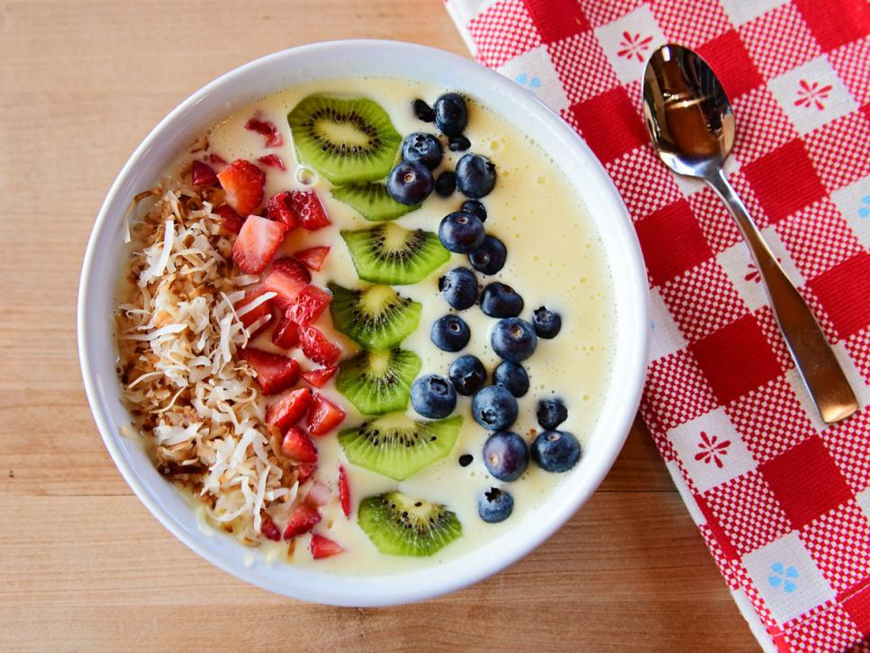

Pineapple Smoothie Bowl

Description
Treat yourself to this tropical-inspired smoothie bowl and all you’ll have to clean up afterward is the blender and a bowl. OK, you’ll have to wash your spoon, too, but you get the point!
Ingredients:
- 2 cups frozen pineapple
- 1 cup vanilla yogurt
- 2 tablespoons sweetened condensed milk
- 2 tablespoons sweetened coconut flakes, toasted
- 1/3 cup blueberries
- 2 large strawberries, chopped
- 1 kiwi, peeled and sliced
- 2 teaspoons chia seeds
Steps:
- Add the pineapple, yogurt and sweetened condensed milk to a blender. Blend until smooth, scraping the sides as needed.
- Pour into a bowl and add the coconut, fruit and chia seeds across the top.